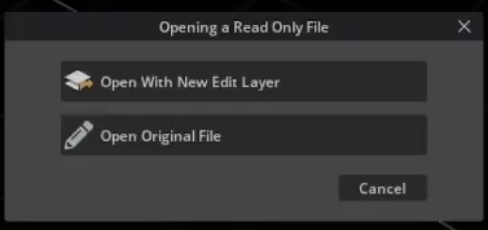
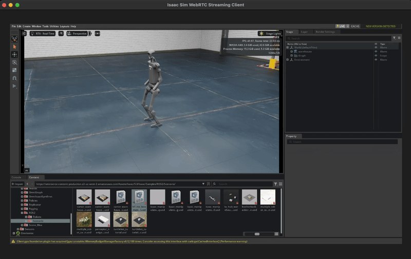

Hardware-in-the-Loop: Deploying Policy on Jetson#
Introduction#
This workflow demonstrates how to run hardware-in-the-loop (HIL) using ROS 2 on an embedded system (i.e. Jetson Orin) and running simulation using Isaac Lab on a separate machine with a desktop GPU.
This tutorial is for users who want to implement their own HIL workflows with Isaac Sim or Isaac Lab, especially in an environment where the embedded system and the simulation machine are not on the same LAN/subnet.
To learn the basics of the ROS 2 Discovery Server, see the ROS 2: Multi-Node Communication guide.
Architecture#
This HIL workflow orchestrates three tasks running in parallel to create a hardware-in-the-loop workflow:
Robot Policy
🤖 Locomotion Policy
The intelligent controller that determines robot movement and behavior.
Runs on: Jetson (ARM64)
Simulation
🎮 Isaac Lab Instance
High-fidelity physics simulation featuring a humanoid robot environment.
Requires: Desktop GPU (x86)
Discovery Server
🌐 Message Router
ROS 2 communication server that routes messages between policy and simulation.
Runs on: Any x86_64 machine

Setting up Startup Scripts#
In this section, we will define the scripts for the tasks to run before starting the main applications.
The following files will be mounted into the the tasks running the robot policy and the simulation instance:
setup_discovery_server.sh
What does this script do?
This script will resolve the IP of the discovery server and export the ROS_DISCOVERY_SERVER environment variable so that the robot policy and the simulation instance know which discovery server to publish and subscribe to.
apt update && apt install -y net-tools netcat dnsutils
DISCOVERY_SERVER_IP=$(nslookup {{host:discovery-server}} | grep -oP \
'Address: \K\d[0-9]{1,3}\.[0-9]{1,3}\.[0-9]{1,3}\.[0-9]{1,3}') # (1)
# Add env variables
export ROS_DISCOVERY_SERVER=$DISCOVERY_SERVER_IP:11811
The token ‘{{host:discovery-server}}’ is an OSMO token that will be resolved into the subdomain name of the discovery server. The script will use nslookup and that subdomain name to get the IP of the discovery server.
install_dependencies.sh
What does this script do?
This script will install the dependencies for the locomotion policy task.
set -e
apt update
git clone https://github.com/isaac-sim/IsaacSim-ros_workspaces.git && \
cd IsaacSim-ros_workspaces && \
git checkout 3beebfc2540486038f56a923effcea099aa49d3e && \
git submodule update --init --recursive # (1)
cd humble_ws && \
source /opt/ros/humble/setup.bash && \
colcon build --symlink-install --packages-up-to h1_fullbody_controller # (2)
curl -s https://bootstrap.pypa.io/get-pip.py -o get-pip.py && \
python3.10 get-pip.py --force-reinstall && \
rm get-pip.py
pip3 install torch # (3)
Fetch the source code of the locomotion policy from the Isaac Sim GitHub repository.
Build the ROS 2 package from the repository.
Install the torch package, which is required by the locomotion policy.
Building the Workflow#
The workflow will have the following file structure:
hil_isaac_lab/
├── install_dependencies.sh
├── setup_discovery_server.sh
└── hil_isaac_lab.yaml # (1)
The main workflow file.
We will now build the workflow to run the HIL simulation, starting with the resources section.
workflow:
name: hardware-in-loop-sim
resources:
default:
cpu: 1
memory: 2Gi
storage: 2Gi
sim:
cpu: 16
gpu: 1
memory: 20Gi
platform: ovx-a40 # (1)
storage: 30Gi
jetson: # (2)
cpu: 8
memory: 26Gi
platform: agx-orin # (3)
storage: 30Gi
groups:
- name: hardware-in-loop
tasks:
Specifying the platform for the simulation machine that has a desktop GPU. You can remove this field if the default platform of the pool targets a machine with a desktop GPU.
Defining the resource spec for the embedded system. Here, we are using a machine with an embedded GPU, so the gpu field can be left out.
Specifying the platform for the embedded system.
Important
Make sure to use the correct platform for the machine you are using. Check the annotations for the platform in the resource spec. To read more about this, please refer to Platforms.
Next we will add the discovery-server task:
- name: discovery-server
image: osrf/ros:humble-desktop-full
command: ['/bin/bash', '/tmp/client.sh']
resource: default
files:
- contents: |
#!/bin/bash
set -e
source /opt/ros/humble/setup.bash
fastdds discovery -i 0 -l 0.0.0.0 -p 11811 # (1)
path: /tmp/client.sh
The command to run the discovery server.
Then, we will add the Isaac Lab task. This task will run the Isaac Lab headless instance, and allow you to livestream the simulation to your local machine.
- name: isaac-lab
image: nvcr.io/nvidia/isaac-lab:2.2.0
lead: true
command: ['/bin/bash', '/tmp/entry.sh']
environment:
ACCEPT_EULA: Y
files:
- contents: |-
apt update && apt install -y net-tools netcat dnsutils sudo
source /tmp/setup_discovery_server.sh # (1)
cd /isaac-sim
./runheadless.sh --/app/livestream/enabled=true # (2)
path: /tmp/entry.sh
- path: /usr/local/share/middleware_profiles/rtps_udp_profile.xml
localpath: rtps_udp_profile.xml
- path: /workspaces/config/mounted_discovery_server_config.xml
localpath: discovery_server_config.xml
- path: /tmp/setup_discovery_server.sh
localpath: setup_discovery_server.sh
resource: sim
Running the setup_discovery_server.sh script to set the correct environment variable for discovery server communication.
Running the Isaac Lab instance.
And finally, we will add the locomotion-policy task:
- name: locomotion-policy
image: arm64v8/ros:humble
command: ["bash", "/tmp/entry.sh"]
files:
- contents: |-
set -e
bash /tmp/install_dependencies.sh # (1)
source /opt/ros/humble/setup.bash && \
source IsaacSim-ros_workspaces/humble_ws/install/setup.bash
export LD_LIBRARY_PATH=/opt/hpcx/ucx/lib:$LD_LIBRARY_PATH
source /tmp/setup_discovery_server.sh
ros2 launch h1_fullbody_controller h1_fullbody_controller.launch.py publish_period_ms:=1 # (2)
path: /tmp/entry.sh
- path: /tmp/setup_discovery_server.sh
localpath: setup_discovery_server.sh
- path: /tmp/install_dependencies.sh
localpath: install_dependencies.sh
resource: jetson
Running the install_dependencies.sh script to install the dependencies for the locomotion policy.
Launch the locomotion policy, and the application will start publishing the movements while subscribing to the robot’s state.
The complete workflow file and required scripts can be found on Github .
Interfacing with Simulation Window#
For a refresher on connecting to the Isaac Sim Streaming Client, see the Livestream tutorial .
After you submit the workflow, you will need to look at the logs for the isaac-lab task.
You can click on the link for Workflow Overview, and click on the Logs tab of the isaac-lab task
to view its logs.
When the task logs this line:
Isaac Sim Full Streaming App is loaded.
Run these commands in two separate terminals:
$ osmo workflow port-forward <workflow ID> isaac-lab --port 47995-48012,49000-49007,49100 --connect-timeout 300
$ osmo workflow port-forward <workflow ID> isaac-lab --port 47995-48012,49000-49007 --udp --connect-timeout 300
After the ports are forwarded, open your Isaac Sim Streaming Client, and click on Connect.

Once you see the Isaac Lab interface, go to the bottom left corner, and click on:
Isaac Sim > Samples > ROS2 > Scenario > h1_locomotion_policy_tutorial.usd

Click on Original file:
{kind=link}
Press the Play button on the left of the screen to start the simulation.
{kind=link}
You should see the robot moving in the simulation!